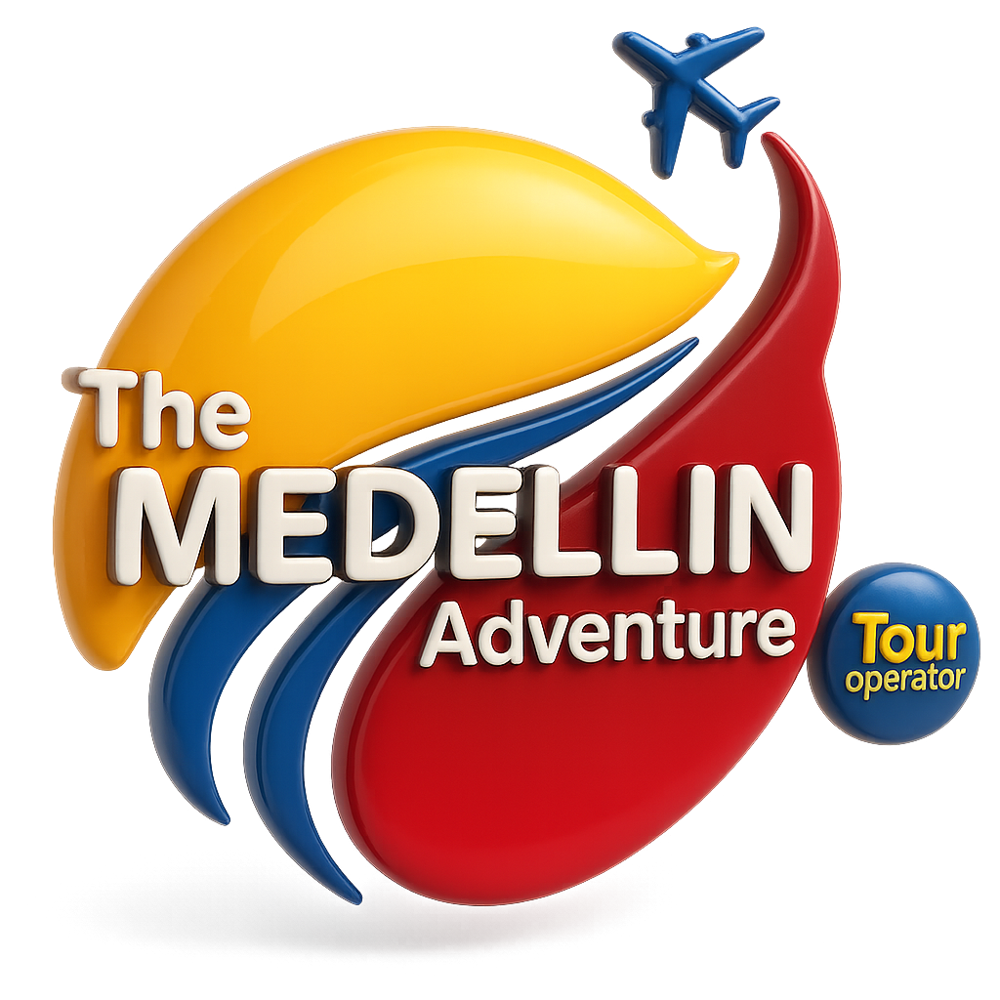
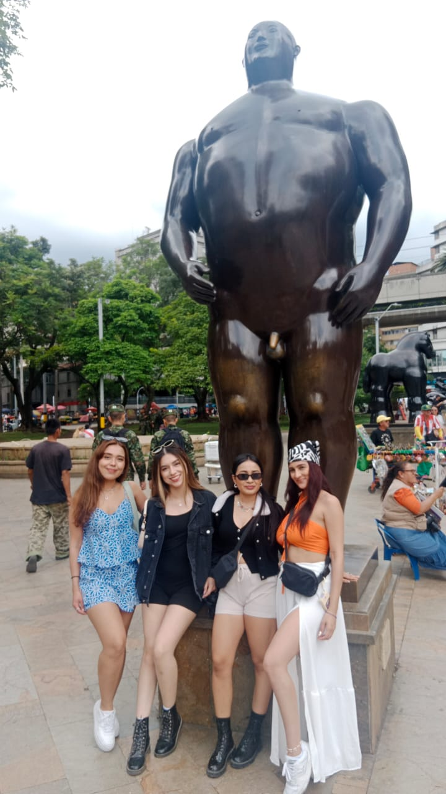
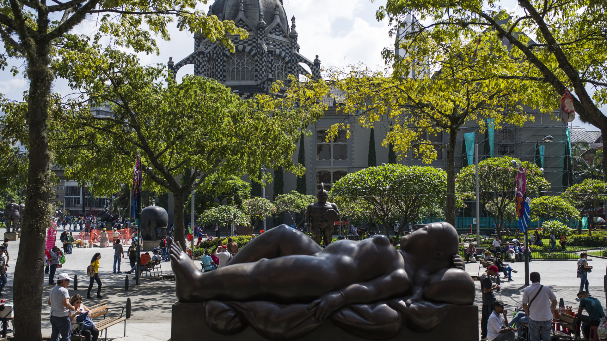
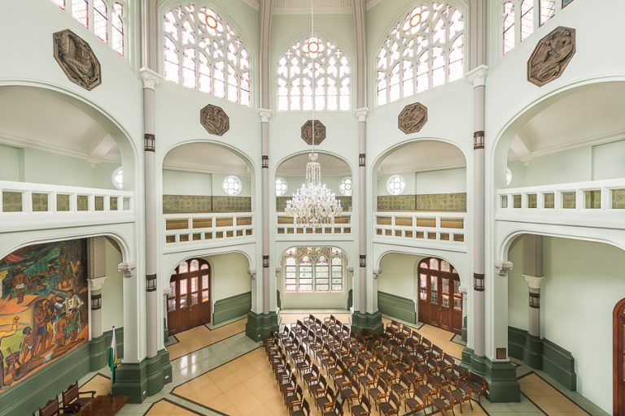
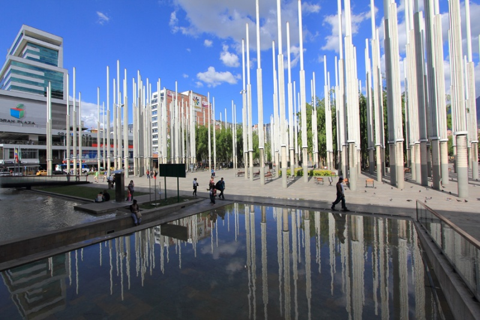

¡Descubre la verdadera esencia de Medellín! Conoce la ciudad más allá de los recorridos tradicionales
Reservar ahoraTe invitamos a vivir el Tour de la Medellín Real, una experiencia diseñada para conectar con la historia, la cultura y la esencia cotidiana de la ciudad. Más que un recorrido tradicional, es una oportunidad para comprender Medellín desde sus calles, su gente y las historias que han construido su identidad.
A lo largo del recorrido caminaremos por el corazón del centro, descubriendo espacios emblemáticos que reflejan procesos de transformación, memoria y resiliencia. Cada lugar nos permitirá entender no solo lo que fue la ciudad, sino también cómo se vive hoy.
Este tour no se trata solo de observar, sino de interpretar, sentir y conectar con la verdadera Medellín a través de una experiencia cercana, auténtica y guiada.

Plaza Botero

Palacio de la Cultura Rafel Uribe Uribe

Palacio Nacional

Parque de las Luces
📅 Fecha: 23 de abril de 2026
📍 Lugar: Plaza Botero
⏰ Hora: 2:00 PM